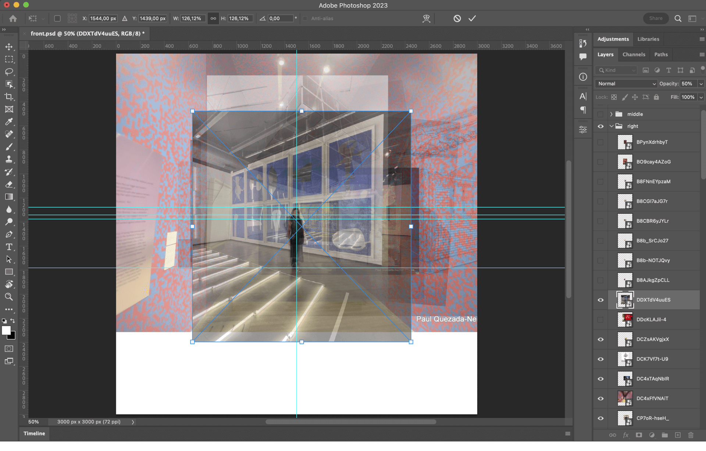

Diana Yukari, Kosara Keskinova
March 5, 2025
The Social Museum explores how people interact with artworks in photos shared on Instagram, uncovering the performative side of museum visits. Are visitors truly engaging with the art, or are they performing in front of the camera to have a curated presence for social media? What defines engagement in this context?
We explored Instagram feeds, analyzing photos that tagged various museums as well as images from the museums' official profiles. Our selection of museums was based on the article. List of most-visited museums by region. We filtered this list to focus on modern and contemporary art museums, as we believed that art provides more opportunities for interaction. A notable limitation in our research is the absence of data on African museums, which we consider relevant.
Screenshots from Instagram.
To gather images from the museums' profiles, we utilized “minet” for scraping pictures and developed our own scraper for tagged photos. This process yielded nearly 40,000 images for analysis.
Screenshot from the first version of the website.
Subsequently, we employed OpenAI’s GPT to classify the images and streamline our analysis. The classification criteria included the presence of individuals (either one or multiple), whether they were painted or drawn representations, the percentage of space they occupied in the image, and whether the photo was taken inside a gallery or outside a room featuring artwork. After experimenting with seven different prompts, we achieved satisfactory results and ultimately opted to use Gemini instead of GPT due to budget constraints. Our final prompt was as follows:
“Consider for all questions: 1. artwork as paintings or drawings or installations or sculptures 2. real human as a person that is not a drawn or painted representation (examine skin texture, light behavior, eye reflections, and overall realism of features) and 3. painted human as either a painted or drawn person from an artwork (examine proportions, stylized anatomy, subtle variations of skin tone, symmetry, sharp transitions with the background and unnatural lighting). Is there an artwork? Are there real humans in the picture? is there only one real human in the picture? Are there multiple real humans in the picture? are there painted humans in this picture? Is the picture taken inside a room? Are there real humans inside an art gallery? When there’s a real person in the picture, what percentage of the space in the picture does it occupy?”
This process generated a CSV file with columns categorized as true or false, allowing us to sort images into specific categories (e.g., people inside a gallery with art), which facilitated a more focused analysis of our research.
Screenshot of the CSV file.
Upon further reflection, we determined that our primary interest lay in examining how individuals behave within gallery settings and how they present themselves in relation to artwork. We sought to ascertain whether these behaviors were consistent across museums globally—a hypothesis that proved accurate. We filtered images to include only those featuring people taken inside galleries.
While our initial results were promising, they were not flawless; thus, we manually reviewed each of the 2,251 pictures fitting this description to correct any misclassifications made by the AI.
Once we had accurately filtered images depicting people in gallery settings, we proceeded to analyze their poses while taking pictures for Instagram. For this analysis, we utilized Python’s “MediaPipe” [add link] to map their positions. Contrary to our expectations, we discovered that most individuals did not adopt extravagant poses in museums; instead, we could categorize their stances into five simple types: side, back, front, sitting, and other. The distribution of these poses was as follows:
Bar chart showing the distribution of visitor poses in museum settings.
For the installation, we aimed to immerse visitors in our research and prompt them to question various aspects of museum interactions in the age of social media. We wanted to provoke thoughts such as: "How does the presence of a camera alter our engagement with artwork? Are we truly interacting with the art, or are we more focused on crafting the perfect social media post? What does it signify when we face the camera instead of the artwork? Is this a performance for an audience, or does it represent a deeper connection to our self-image in relation to the art? When we turn our backs to the artwork, are we dismissing it, or engaging with the space in a different way?"
With these objectives in mind, we decided to begin the installation with a video introduction presenting our findings and posing open questions about our dataset.
To create this video, we compiled all tagged images and categorized them based on visitor positioning: front-facing, side views, and back-facing, with further subcategories for variations in angle. Each image was manually aligned in Photoshop at 50% opacity to ensure precision—an approach we prioritized over automated solutions like Python to maintain accuracy. Once aligned, we transferred the layered composition to After Effects, where we animated the sequence in a continuous 360-degree motion. Each image was displayed at 70% opacity for half a second, with the pacing adjusted to align seamlessly with the audio. The final result is a dynamic visualization of the patterns we uncovered, inviting viewers to immerse themselves in the ways people present themselves in museum spaces.
Screenshot from Photoshop's working progress.
Following the introductory video, we sought to create an interactive experience that would engage visitors based on their physical positioning. We implemented a camera system to detect visitors' poses in real-time, categorizing them according to our established classification system. This allowed us to reveal images from our research that corresponded to similar poses adopted by museum-goers on social media.
At the conclusion of the experience, we prompt visitors to reflect on how they might behave in a gallery space, considering the insights gained from our research. A photograph is then taken of the visitor, which is displayed on a website where one can view all the images captured that day and download their own picture.
Image of the screen during the exhibition.
The website also serves as a comprehensive repository of our research data. It contains all 2,251 photos of people in gallery settings that we analyzed, along with filters for each pose category we identified (side, back, front, sitting, and other). This allows visitors to explore the full dataset and observe the patterns we discovered in our study.
Additionally, we included this detailed description of our research protocol, outlining the methodologies we employed. This transparency in our research process enables visitors to understand the rigor behind our findings and potentially inspire further investigations into the intersection of social media and museum experiences.
This interactive approach allows visitors to engage with our research findings and also to become active participants in the ongoing dialogue about social media's impact on museum experiences. By seeing themselves reflected in the context of our study, visitors are encouraged to critically examine their own behaviors and motivations when interacting with art in public spaces.